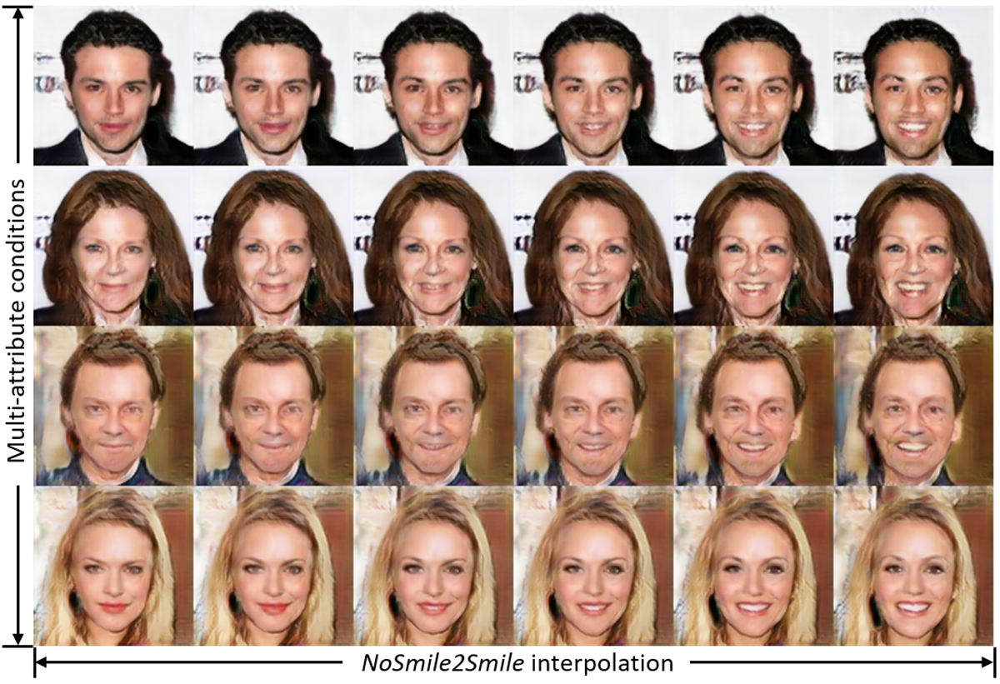
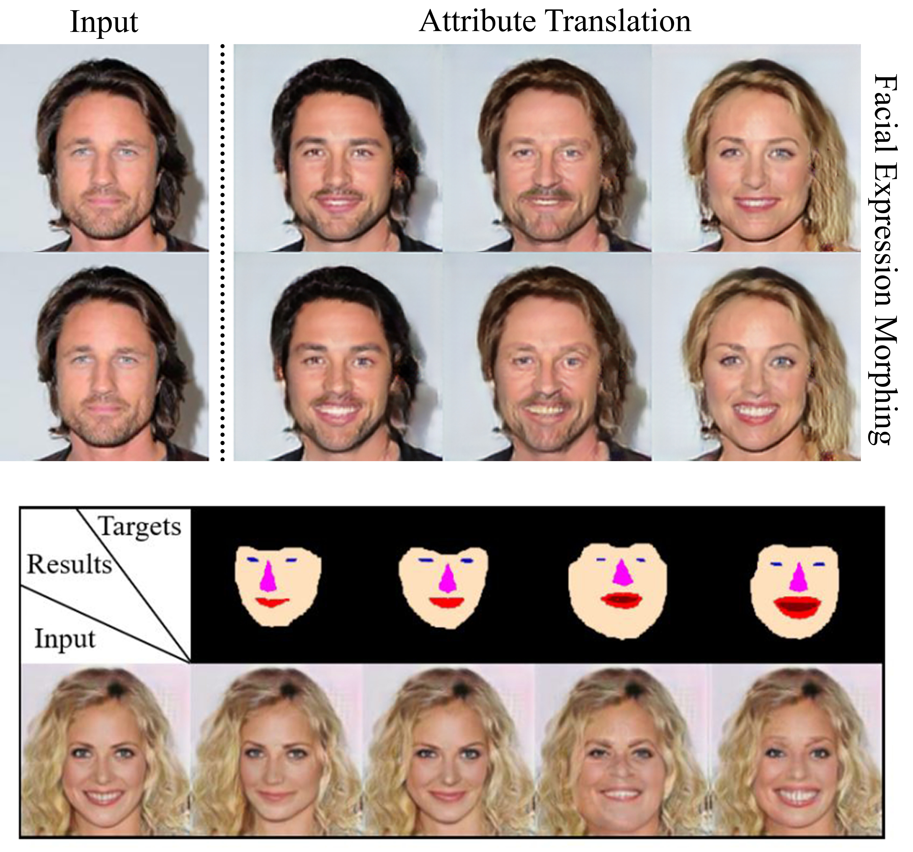

|
I am a PhD candidate at Northeastern University, where I work on computer vision and machine learning in SmileLab advised by Dr. Yun (Raymond) Fu. I am a co-founder of an AI beauty startup company Giaran, Inc., which was acquired by Shiseido Americas in Nov. 2017 (Here's the News). I received my masters degree at the University of Michigan and my bachelors at The Hong Kong Polytechnic University. I am a photography lover, and here is my Small Gallery |

|
|
I'm interested in computer vision, machine learning, image processing, and computational photography. Much of my research is about human faces and pose estimation. |

|
Video-based Multi-person Pose Estimation and Tracking. Under development and construction. Inferencing model provided on GitHub. |
|  |
Image generation has raised tremendous attention in both academic and industrial areas, especially for criminal portrait and fashion design. The current studies always focus on class labels as the condition where spatial contents are randomly generated. The edge details and spatial information is usually blurred and difficult to preserve. In light of this, we propose a novel Spatially Constrained Generative Adversarial Network , which decouples the spatial constraints from the latent vector and makes them feasible as additional controllable signals. Experimentally, we provide both visual and quantitive results, and demonstrate that the proposed SCGAN is very effective in controlling the spatial contents as well as generating high-quality images. |
|  |
Recently image-to-image translation methods neglect to utilize higher-level and instance-specific information to guide the training process, leading to a great deal of unrealistic generated images of low quality. Existing methods also lack of spatial controllability during translation. To address these challenge, we propose a novel Segmentation Guided Generative Adversarial Networks, which leverages semantic segmentation to further boost the generation performance and provide spatial mapping. Experimental results on multi-domain face image translation task empirically demonstrate our ability of the spatial modification and our superiority in image quality over several state-of-the-art methods. |

|
Facial makeup style plays a key role in the facial appearance making it more beautiful and attractive. Choosing the best makeup style for a certain face to fit a certain occasion is a full art. To solve this problem computationally, an automatic and smart facial makeup recommendation and synthesis system is proposed in this paper. Additionally, an automatic facial makeup synthesis system is developed to apply the recommended style on the facial image as well. To this end, a new dataset with 961 different females photos collected and labeled. |

|
We consider a fully automatic makeup recommendation system and propose a novel examples-rules guided deep neural network approach. The framework consists of three stages. First, makeup-related facial traits are classified into structured coding. Second, these facial traits are fed in- to examples-rules guided deep neural recommendation model which makes use of the pairwise of Before-After images and the makeup artist knowledge jointly. Finally, to visualize the recommended makeup style, an automatic makeup synthesis system is developed as well. |
{kind=link}
{kind=link}
|
This website is generated using source code from Jon Barron. |